Джей Милкман - музыкант, знаковая фигура в становлении электронной андеграундной сцены Волгоградского региона. Он стоял у истоков волгоградского индустриального движения и принимал активное участие во всех электронных вечеринках Волгограда и Волжского. Этот лонгрид повествует о жизни и творчестве феноменального человека, наложившего отечаток на музыкальную жизнь целого региона.
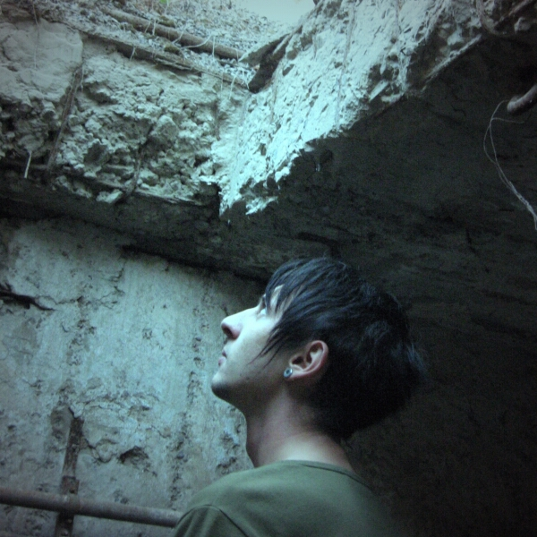Джей Милкман
Родился, тогда еще просто Илья, 20го мая 1985 года в семье двух интеллигентов: отец был инженером, а мать — врачом. С ранних лет родители пытались привить сыну любовь к искусству. Однако в силу непростой экономико-политческой ситуации в стране им не слишком удавалось уделять много времени ребенку, вместо этого пропадая целыми днями на работе. В результате Джей был предоставен самому себе и большую часть времени проводил на улице. Там он научился быть самостоятельным, что помогло ему формировать свои вкусы не зависимо от мнения старшего поколения. Возможно, именно поэтому у него и сложились настолько прогрессивные взгляды.
Первые музыкальные эксперименты со звуком Илья начал проводить еще в середине 90х, едва ему исполнилось 10 лет. Поскольку отец Джея был инженером, у них дома стоял компьютер, что в те времена для обычных семей было большой редкостью. Вдохновленный такими исполнителями, как Жан Мишель Жар и Kraftwerk, Джей начал писать свои первые композиции на компьютере. Никаких музыкальных программ у него не было, поэтому он работал на языке программирования Basic, в модуле Sound, вручную выставляя частоту звуков, что сближало его со своими кумирами - пионерами компьютерной музыки. Именно в этот период и были записаны его первые магнито-альбомы.
Другой стороной увлечений Ильи, оказавшей на него немалое влияние, была британская Эсид-джаз группа «Jamiroquai». Именно в честь ее лидера Джея Кея он и выбрал свой псевдоним. Так он впервые стал "Джеем". Увлеченный этим направлением, Джей пришёл к пониманию, что для полноценного развития в качестве музыканта, ему необходимы настоящие инструменты. И простой мелодикой, которая была у него с детства, здесь явно уже не обойтись (однако в дальнейшем он и ей нашёл применение на концертах). Ближе к концу 90х он приобрёл свои первые синтезаторы Casio и Yamaha и начал заниматься на барабанах. Примерно в тот же период Джей овладел и основами игры на гитаре, но какой-то особой любовью к ней не проникся, в результате отложив ее всторону. Однако это помогло ему сформировать комплексное понимание музыки.
В этом месте необходимо сделать небольшое отступление, и сказать, что одной лишь музыкой творчество Джея не ограничивалось. Джей писал небольшие сатирические рассказы, используя при этом аутентичную печатающую машинку. Именно таким был Джей. Имея компьютер с ранних лет, он считал, что "трушный" писатель обязан творить, как завещали предки, и никак иначе. Помимо писательской деятельности Джей также пробовал себя и в изобразительном искусстве. Он был большим поклонником модернизма в живописи, а особенно таких жанров, как сюрреализм, кубизм, экспрессионизм и футуризм, что прослеживается в его работах. Среди источников вдохновения можно отметить работы Сальвадора Дали, а особую роль для него сыграл мультипликационный фильм «Желтая подводная лодка», как пример модернистского взгляда на взаимодействие музыки с визуальным рядом. Из советского наследия можно отметить мультфильм «Тайна третьей планеты», прививший ему любовь к ретро-футуризму.
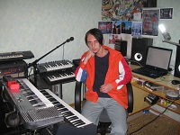 Настоящим прорывом в музыкальном творчестве можно считать начало "нулевых" годов, когда Джею удалось собрать всё необходимое для оборудования домашней студии. За короткий период времени с 2002-2005г Джей записал 7 альбомов: «D», «Electrofreezin», «Kundalini», «P», «Retrospective», «Songs of 04» и «Technology». Такую плодовитость можно объяснить тем, что многие из этих композиций были сочинены в прошлые годы. Кроме того, все альбомы имели формат EP. Столь богатое музыкальное многообразие сложно определить каким-то одним стилем. Музыка Джея в те времена сочетала в себе битпоп, синтипоп, техно, рейв, брейкбит и I.D.M. Композитор приобрел характерное и узнаваемое холодное электронное звучание, которое он пронёс сквозь всё своё творчетво.
JAY — YUI
JAY — ChiP
JAY — Transistor
JAY — 3000
Примерно в это же время Джей начал сотрудничать с другими музыкантами. В 2003м году он объединился с Павлом Нериком (гитара, вокал), Александром Володиным (гитара) и Игорем Агеевым (бас-гитара) в музыкальный коллектив, получивший название «Art. Mind». («Art Mind» переводится как творческий разум, но в данном случае это игра слов, так как присутствует сокращение. За точкой скрывается слово «artificial», которое меняет смысл на «Искусственный разум») Сам же Джей, будучи мультиинструменталистом, взял на себя сразу две роли в группе: ударник и клавишник.
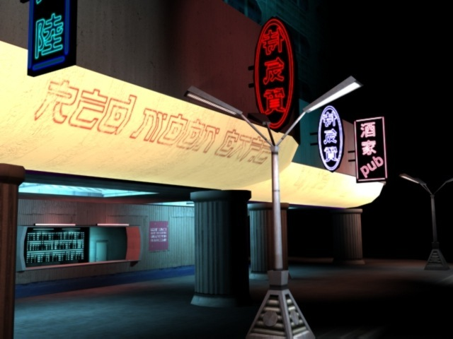 Стилем музыки новой группы стал киберпанк. Величайшим успехом коллектива можно считать запись саундтрека к экшн-рпг игре «Live If You Dare», создаваемой итальянской компанией, за что группа получила неплохой гонорар. Кроме того, путем продажи лицензии, эти же композиции попали в саундтрек другой игры - «Месть якудза», благодаря чему обрели некоторую популярность, и по сей день эти композиции можно услышать в роликах различных видеоблогеров. Из этих треков, а так же других, так и не вошедших в игру, был составлен первый и единственный альбом группы, получивший одноимённое название «Live If You Dare».
С выходом музыки в интернет, Джей понял недостаток своего псевдонима. Возникла необходимость в более узнаваемом никнейме. И тогда сама собой родилась вторая половина его имени - Милкман. Легенда гласит, что однажды на работе на него опрокинулся бидон с молоком. Так Джей стал Милкманом.
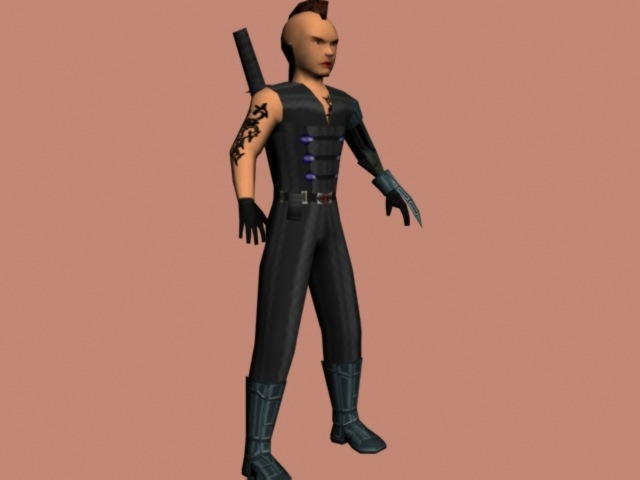 На живых выступлениях, первое из которых состоялось 20 мая 2003 года, группа Art. Mind охотно шла на взаимодействие с публикой, устраивала массу импровизаций, используя кроме стандартных средств самовыражения и не совсем обычные — такие, как плёночный кино-проектор, что делало перформанс незабываемым. В конце августа 2004го года группа прекратила своё существование, оставив однако после себя богатое наследие.
Art Mind — Mask
Art Mind — HARD Vocal mix
Art Mind — Fight Song
Art Mind — Live If You Dare
Уже в том же 2004м году в душной комнате тесной хоум-студии с говорящим названием «Small Room» родился новый проект с участием Джея Милкмана - группа «Fresh Air». Помимо него самого, другим ее сооснователем стал еще один экс-участник распавшейся группы «Art Mind» — Павел Нерик (гитара). Направление определилось не сразу: на начальных этапах творчество носило весьма эксперементальный характер. Но вскоре, вдохновленные Depeche Mode, Camouflage и Kraftwerk, а позднее и Covenant, музыканты сделали выбор в пользу синтипопа. В этот период была записана композиция, ставшая визитной карточкой Fresh Air — Moon Units.
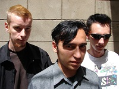 В 2005м году группа приняла решение перейти от студийной деятельности к концертной. Коллектив пригласили провести большой трибьют-концерт Depeche Mode в поддержку одного из кандидатов в депутаты. В ходе подготовки программы «Down to the bone» всё острее стала ощущаться необходимость ещё одного музыканта. Так к группе присоединился второй клавишник Андрей Степанов (Andrew White). В этот период известность группы начала постепенно нарастать. «Концерты наших героев собирали аншлаг» — так писали в местной газете «Наш Город». Это происходило во многом благодаря экспериментам со светом и звуком в ходе концертов. Кроме синтезаторов и гитары музыканты использовали вышеупомянутую мелодику и неприменный атрибут битпопа — игровую приставку Sony PlayStation с её аудио-трекером и виртуальными синтезаторами. Группа приняла участие в своей первой фотосессии для газеты и была напечатана на плакатах.
В дальнейшем группа приступила к записи нового материала, в котором полностью отказалась от использования электрогитары в пользу полностью синтезированного звука. На этот раз композиции были выдержаны в более современном стиле фьючепоп. Начал свою работу сайт, посвящённый Fresh Air (ныне закрыт).
С переменным успехом группа просуществовала аж до 2011го года, перейдя в разряд сайд-проекта, так как с этого времени Джей Милкман начал вести сразу несколько параллельных проектов.
Fresh Air — Moon Units
Fresh Air — Silent And Sleep
Одним из таких проектов стал основанный Джеем Милкманом в 2006 году проект S.N.R. Название расшифровывается как «Sound Noise Record», и в нём явно угадывается отсылка к понятию "signal-to-noise ratio", означающему "Отношение сигнал/шум". В том же году к проекту присоединился Евгений Соловьев (Shcherbet). На начальном этапе музыкальный стиль носил сугубо экспериментальный характер. Девизом группы был "минимализм во всём". Вся музыка писалась всего лишь на двух синтезаторах. Ещё одной отличительной особенностью проекта стало активное использование визуализаций. К музыке группы выходило огромное количество промо-видео, которое могло транслироваться как на цифровом проекторе во время концертов, так и распространялось на отдельном DVD или в интернете. Сами ролики в большинстве своём представляли собой трёхмерную граффику или живые съёмки с компьютерными эффектами.
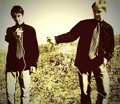 В период с 2006-2007 годы были записаны пять концептуальных альбомов: «Work 1», «Work 2», «Data code», «Created for person (Personal mix)» и «Through a material». Группа активно выступала в поддержку альбомов. На место покинувшего проект в 2007м году Евгения Соловьева пришёл Даниил Бан (Zitt). В таком составе группа просуществовала до начала 2008го года.
Летом 2009го года к проекту присоединился Иван Рубенштайн (Johann Rubenstein), и вместе с Джеем Милкманом и Даниилом Zitt'ом они начали работу над новым альбомом, получившим название «Tape». К этому моменту музыкальный стиль группы окончательно сформировался как intelligent-electro/new wave, а также появились тексты на русском языке.
Sound Noise Record — Wire Connected
Sound Noise Record — Tape
Sound Noise Record — Created For Person
Sound Noise Record — Future Of Past
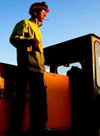 Другим проектом Джея Милкмана стал презентованный 7 апреля 2008го года «Milk-man*s= KRANTRANSPORT». На этот раз Джей впервые задумался об общем брендировании своих проектов, и вынес своё имя прямо в название. Музыка Крантранспорта стала результатом творческого союза с Михаилом Фагусом (GalaxY, Cubering), а на живых выступлениям группы компанию им составляли два танцора: Даниил Бан (Zitt) и Денис "Шум" Иванов. Большое внимание было уделено эстетике коллектива: группа выходила на сцену в оранжевых строительных комбиниезонах и касках, на сцене использовались дорожные конусы, оградительные ленты и мигалки. То же самое можно сказать и про тематику музыки коллектива. Она была наполнена футуристической романтикой тёмного будущего рабочего класса и строительной эстетикой.
Подход к написанию альбомов стал более тщательный, поэтому за не слишком долгую историю группы было выпущено всего три альбома. Первый вышел в свет в 2008м году, и назывался «30M», второй появился в 2009м и получил название «Steel rain», последний был издан в 2010м под названием «Air». Помимо этого, отдельные композиции группы попали на сборники «Promo-signal» с первого по третий, а также был выпущен отдельный диск «Data CD» с дополнительными материалами.
Группа активно выступала в Волгограде и Волжском, а география гастролей простиралась от Ростова-на-Дону до Нижнего Новгорода. С 2010го года Михаил Фагус потерял возможность участвовать на концертах, и его место за синтезаторами занял Даниил Zitt.
 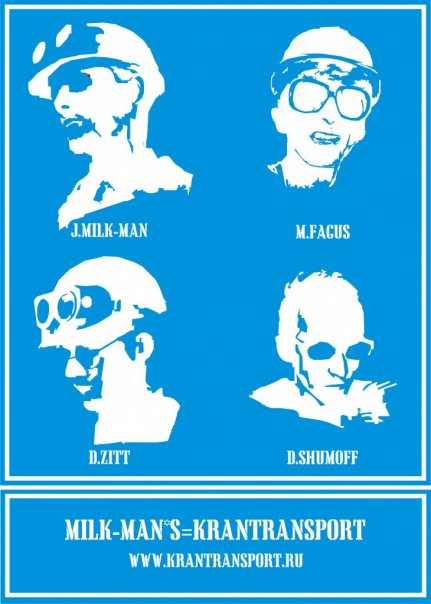
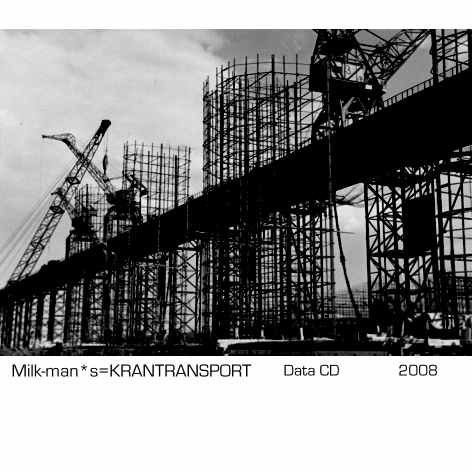
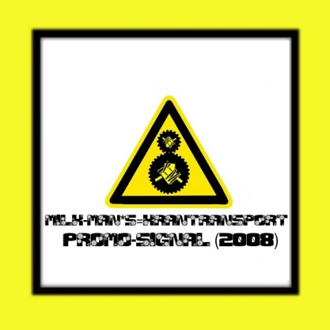
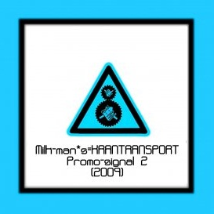
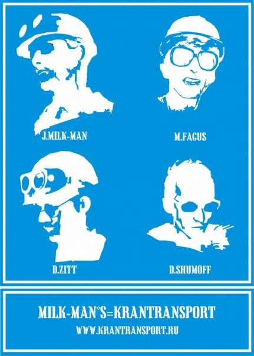
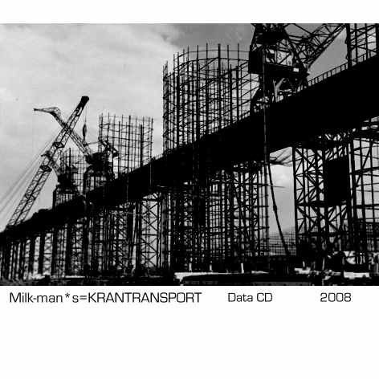
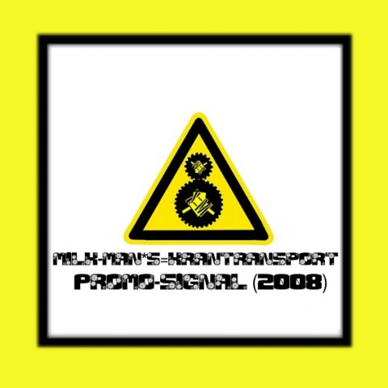
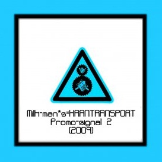
 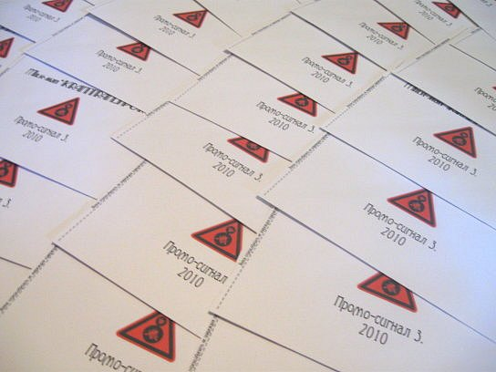
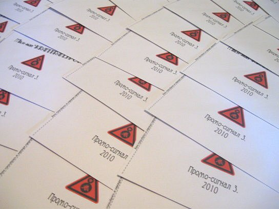
В 2022м году на лейбле Winter Solstice Productions в формате компакт-кассеты вышел сборник-компиляция с переизданием лучших песен с альбомов «30M» и «Air», получивший название «Air Fields».
Milk-man*s=KRANTRANSPORT — Big Space
Milk-man*s=KRANTRANSPORT — Tokyo Metro
Milk-man*s=KRANTRANSPORT — Radiance
Стоит так же упомянуть и небольшой проект «Miasma» в стиле ambient, noise, вся суть которого заключалась в том, что Джей своими руками спроектировал и спаял эффект типа noise, а затем записал с его помощью альбом.
Кроме того с июля 2009го по январь 2011го года Джей Милкман был также участником не нуждающейся в представлении культовой волгоградской индустриальной группы «GNAT». Там он составил компанию Сергею Сереброву и Петру Булычеву вместо выбывшего Макса Веселовского.
 Не стоит так же забывать, что Джей Милкман был не только идейным вдохновителем и организатором коллективов: «S.N.R.», «Milk-man*s= KRANTRANSPORT», «Fresh air» и участником «Gnat». Он так же отметился ещё и сольным творчестовом. В 2010м году он получил приглашение принять участие в качестве KRANTRANSPORT на мероприятии, посвящённом дню архитектора в Нижнем Новгороде. Местом проведения "Архи-пати" было выбрано не так давно открытое на тот момент заведение "Сити кафе оранж". Однако Джей решил привести программу, которая смогла бы объединить в себе его наработки и из «Sound Noise Record», и из «Milk-man*s=KRANTRANSPORT» со своими сольными композициями и исполнить их под своим собственным брендом - Jay Milk-man. Возможно поэтому он и пригласил в качестве своеого клавишника человека, не занятого ни в одной из этих групп с одной стороны, и не совершенно постороннего с другой. Таким образом выбор пал на его старого приятеля и товарища по «Fresh Air» - Андрея White'а. Следует отметить, что Джей проявил достаточную демократичность и оставил Андрею некоторый простор для импровизации, что придало программе неповторимый оттенок. Концерт прошёл 9го октября 2010го года.
Не стоит так же забывать, что Джей Милкман был не только идейным вдохновителем и организатором коллективов: «S.N.R.», «Milk-man*s= KRANTRANSPORT», «Fresh air» и участником «Gnat». Он так же отметился ещё и сольным творчестовом. В 2010м году он получил приглашение принять участие в качестве KRANTRANSPORT на мероприятии, посвящённом дню архитектора в Нижнем Новгороде. Местом проведения "Архи-пати" было выбрано не так давно открытое на тот момент заведение "Сити кафе оранж". Однако Джей решил привести программу, которая смогла бы объединить в себе его наработки и из «Sound Noise Record», и из «Milk-man*s=KRANTRANSPORT» со своими сольными композициями и исполнить их под своим собственным брендом - Jay Milk-man. Возможно поэтому он и пригласил в качестве своеого клавишника человека, не занятого ни в одной из этих групп с одной стороны, и не совершенно постороннего с другой. Таким образом выбор пал на его старого приятеля и товарища по «Fresh Air» - Андрея White'а. Следует отметить, что Джей проявил достаточную демократичность и оставил Андрею некоторый простор для импровизации, что придало программе неповторимый оттенок. Концерт прошёл 9го октября 2010го года.
Jay Milk-man — Air Waves
Говоря о Джее Милкмане нельзя так же не осветить еще одну сторону его деятельности. Будучи уже опытным исполнителем, Джей понимал с какими трудностями могут столкнуться музыканты на Волгоградской андеграундной сцене. А это практически полное отсутствие малых концертных площадок в клубах, либо их слабая техническая оснащённость, не достаточное количество музыкальных лейблов, студий и организаторов. На весь Волгоград был всего лишь один организатор Алексей из концертного агенства «RAZGROM MUSIC». Ситуация немного улучшилась в 2007м году с переездом в Волгоград Сергея Коротаева и появлением его «STP Promotion». А в городе Волжском эта ниша не была заполнена вообще ни кем.
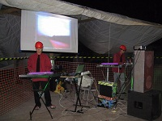 Ещё в 2005м году, выступая в клубе в Волжском, Джей столкнулся с необходимостью привозить с собой не только инструменты, но и усилитель, микшер, все шнуры и даже свет. В самом клубе были только колонки и микрофон. Но со светом тогда были проблемы и у самого Джея, и он вышел из ситуации с присущим ему изяществом: кинул клич в интернете, что собирает красные лампы от старых фото проявителей. Такие были практически у каждого дома, как наследие от советского прошлого, и были совершенно не нужными в век цифровой фотографии. Так что на его просьбу откликнулось достаточное количество человек, чтобы он смог подсветить весь зал красным светом. Но с этого момента Джей понял, что нужно иметь своё собственное световое оборудование и начал приобретать стробоскопы, дымовую машину, лазер и цифровой проектор. Вскоре у него накопилось такое количество оборудования, что стало возможным проводить мероприятия самому, не хватало только зала. Проблема с залом решилась сама собой, и решение было очевидным. Зал не нужен, если организовать оупен-эир. Однако оупен-эир нельзя проводить в "чистом поле". Всё-таки нужна какая-то инфраструктура: туалеты, электричество, подвоз аудитории и участников, охрана территории. По всем этим параметрам подходила турбаза. Именно там и были организованы первые оупен-эиры Джея. Кроме того, в те времена в городах стали набирать популярность лофты в ревитализированных пространствах. Вдохновившись этой идеей, Джей решил организовать что-то подобное на постоянной основе и в Волжском. Учитывая местную специфику, ему удалось арендовать только кирпичный тёплый гараж, на базе которого он организовал андеграундный клуб «Конус-Гараж». Нелегальность предприятия придавала рейверскую трушность месту.
Примерно по такому же принципу Джей Милкман организовал свой музыкальный лейбл. Следуя выбранной стратегии единого брендирования, новый лейбл он назвал «Conus records», как и в случае с гаражом.
Таким был Джей Милкман - музыкант, художник, организатор и D.I.Y. 25 января 2011го года Джея Милкмана не стало. Но его вклад в развитие Волгоградской андеграундной сцены сложно переоценить.